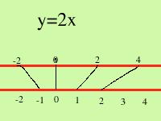
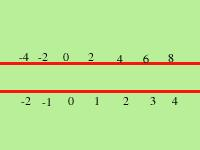

|  Io, personalmente, trovo un po' riduttiva questa idea di funzione e talvolta ad alcune classi particolarmente brave l'ho spiegata in modo (quasi) equivalente come segue: pensate due rette fra loro parallele, immaginiamo una freccia che ad ogni punto della prima retta mi faccia corrispondere un punto sulla seconda,  ed ora immaginiamo di spostare i punti sulla seconda retta (come se fosse di gomma) in modo che ad ogni punto della prima retta stia di fronte il punto corrispondente sulla seconda, in tal caso la funzione sarebbe come vengono "addensati" i punti sulla seconda retta al variare della x sulla prima retta; bene, mi dira' qualcuno, ma a cosa serve questo ragionamento? serve a capire che la funzione e' qualcosa di piu' della sua rappresentazione cartesiana: la funzione e' un fenomeno (in senso filosofico) che coinvolge i punti dell'asse delle y (in parole povere e' come si addensano i punti sull'asse delle y) e la curva nel piano cartesiano ne e' solamente una rappresentazione grafica |